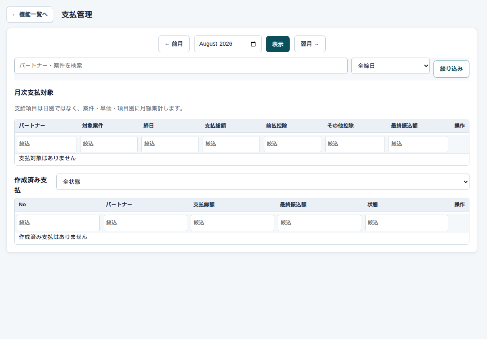

精算 → 支払
支払の一覧
まず、この画面
請求と同じ型で、パートナー向けです。上段が今月の支払対象、下段が作成済みです。管理者・経営者・総務・営業・パートナー権限（自分分）が使えます。

詳細へ
下書き作成のあとは 支払の詳細 です。控除（事務手数料や安全協力会費など）は支払側の明細に乗ります。引ききれない分は繰越になります。
気をつけること
給与明細が必要な案件は、支払明細書と給与明細書の両方が出ます。0円の料金行は帳票に出しません。
精算 → 支払
請求と同じ型で、パートナー向けです。上段が今月の支払対象、下段が作成済みです。管理者・経営者・総務・営業・パートナー権限（自分分）が使えます。

下書き作成のあとは 支払の詳細 です。控除（事務手数料や安全協力会費など）は支払側の明細に乗ります。引ききれない分は繰越になります。